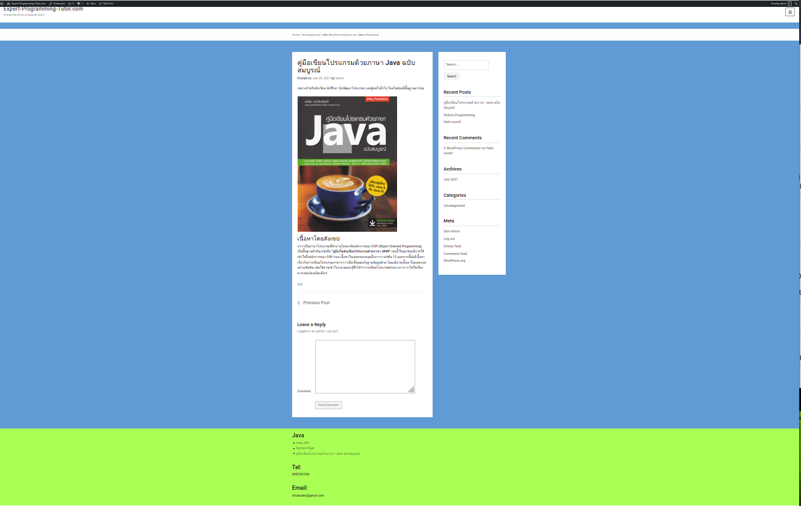
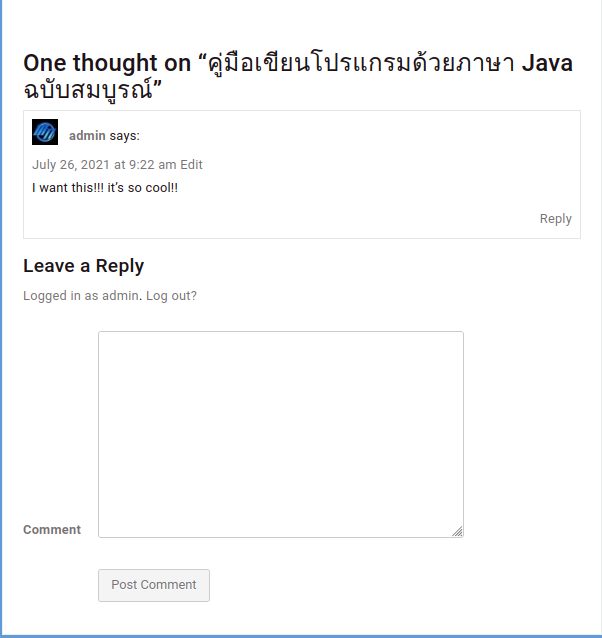

ทดสอบการใช้ wordpress เพื่อสร้าง web blog ขึ้นมาผ่าน xampp ในที่นี้ทดลอง Add new post ไป 3 page ด้วยกันและเมื่อกดclickที่ปุ่ม Read more จะไปยังหน้ารายละเอียดที่Postดังรูปด้านล่าง
ในPostนี้จะมีข้อมูลของหนังสือJavaอยู่ ผู้ที่เข้ามาอ่านจะสามารถพิมพ์ comment ในกรอบ textArea ด้านล่างได้อีกด้วยเมื่อพิมพ์เสร็จก็กดปุ่ม Post comment ข้อความที่พิมพ์จะไปปรากฏบน Post ดังรูปด้านล่าง
จะเห็นได้ว่าการใช้งาน wordpress นั้นสะดวกมากทางฝั่ง admin สามารถเข้าไปปรับแต่งรายละอียดในเว็บไม่ว่าจะเป็น menu, post หรือ แม้กระทั่ง Theme ต่างๆได้เพียงแค่โหลดมาติดตั้งและยังสามารถแก้ไข css ของ theme ได้อีกด้วย